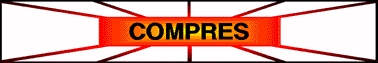
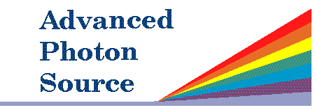
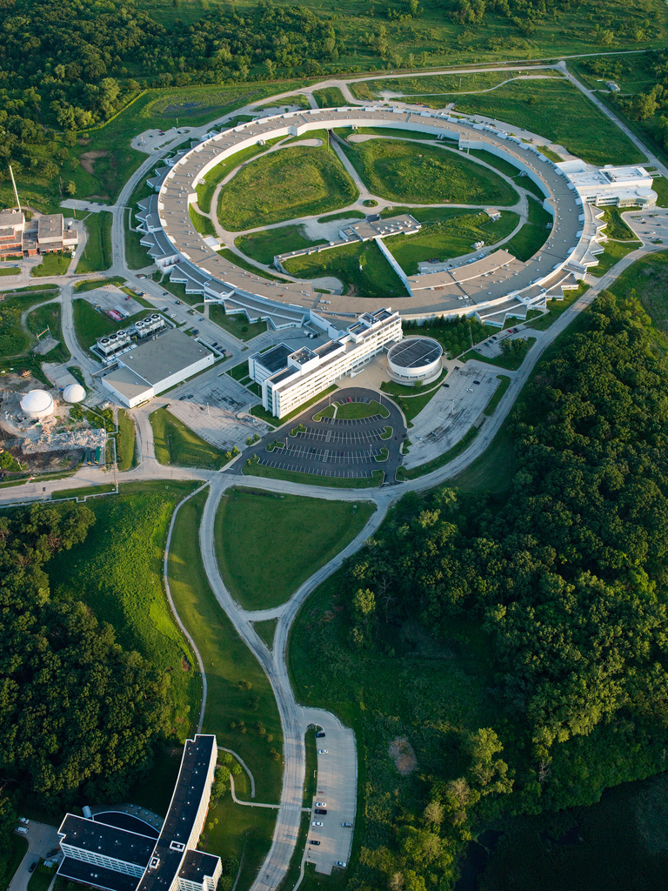
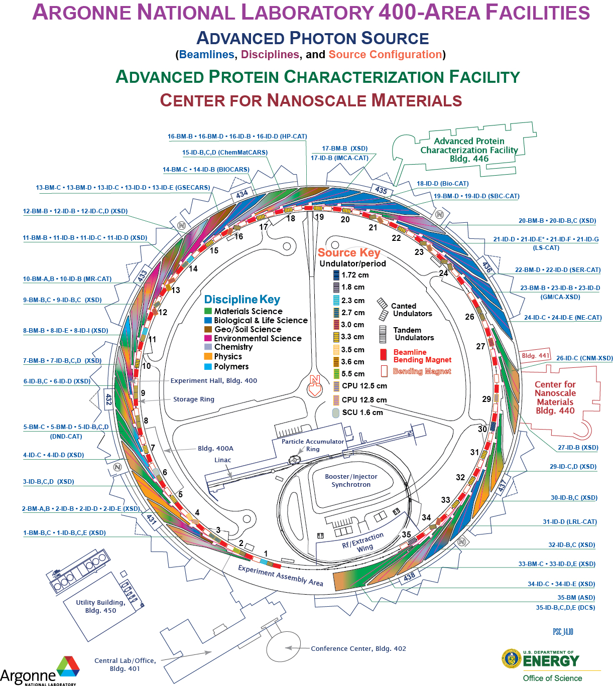
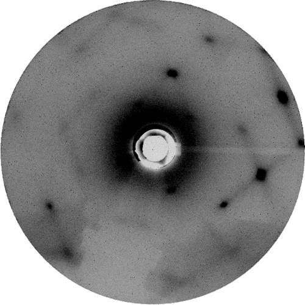
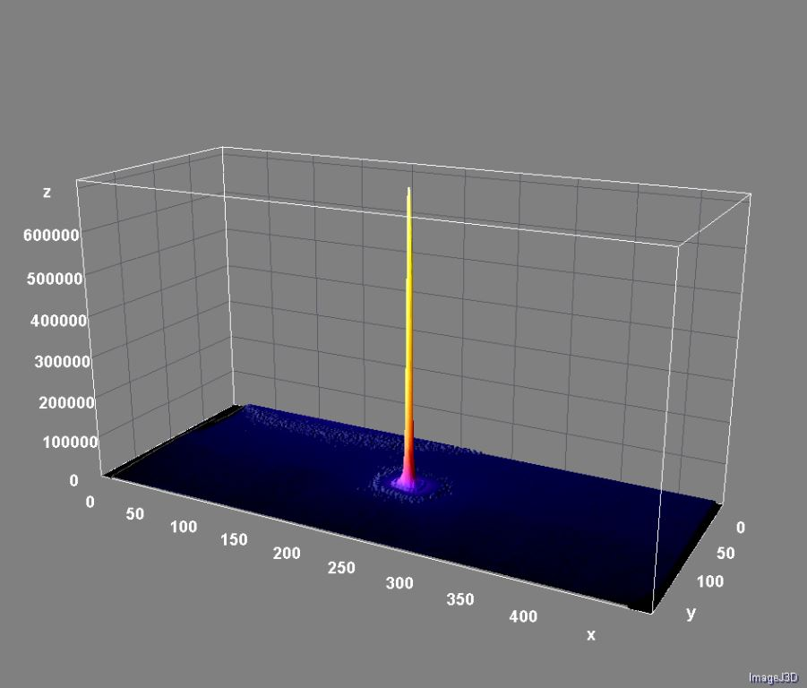
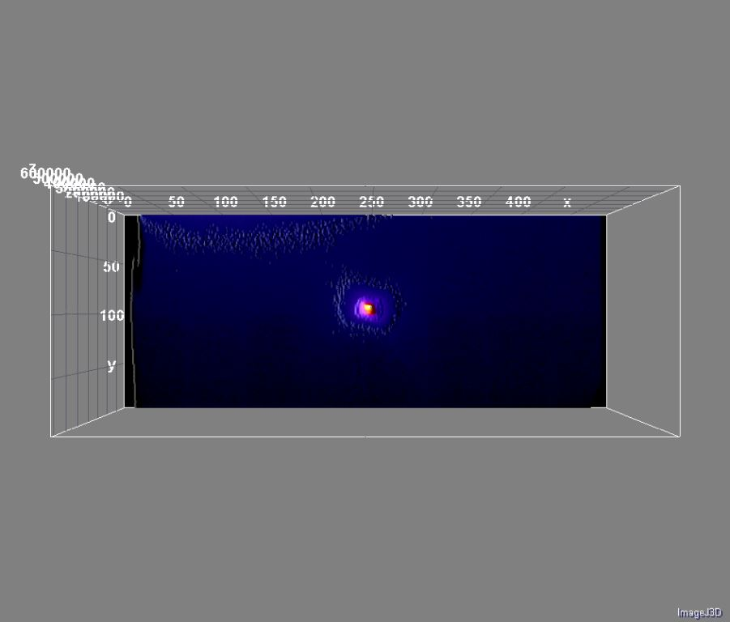
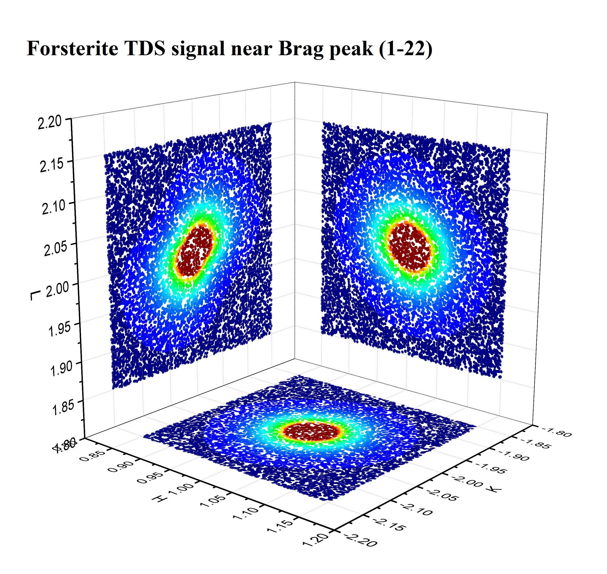

Homepage
COMPRES Technology Center (COMPTECH)
About COMPTECH and COMPRES
COMPRES, the Consortium for Materials Properties Research in Earth Sciences is a community-based consortium whose goal is to enable Earth Science researchers to conduct the next generation of high-pressure science on world-class equipment and facilities. It facilitates the operation of beam lines, the development of new technologies for high-pressure Earth science studies, and advocates for science and educational programs to the various funding agencies.
COMPRES Technology Center (COMPTECH) is COMPRES's presence at the Advanced Photon Source, Argonne National Laboratory. It is established to realize the main mission is to create new capabilities and preferential access to state-of-the art facilities at existing beam lines at Advanced Photon Source for the COMPRES community, and help to bring up new and important discoveries in deep Earth interior.
COMPTECH at APS 
The location of the COMPTECH at the Argonne Laboratory brings several significant advantages:

1. APS, as the most advanced 3rd generation hard X-ray source in U.S., hosts a variety on unique,state of the art instruments and engages in development of novel forefront experimental technology.
2. APS hosts several of the current COMPRES projects and there are on-going plans to establish more permanent COMPRES facilities though PUP proposals;
3. APS also hosts a lot of resident experts on experimental technology, software and methods development, as well as a whole spectrum of high-pressure researchers, who will be interested in collaborating with the COMPTECH;
4. APS is located at a central research facility frequently visited by the majority of active COMPRES members, which should allow and stimulate collaborations.
COMPTECH Highlights
Development of thermal diffused scattering (TDS) for measuring single-crystal elastic properties:
   
New and Events
21 April 2015: Universal TDS fitting code developed by Dr. Jin Zhang is proved to be working for Si under ambient conditions.
5 March 2015: TDS measurements on Si at high-pressure using the entrance flight path with Pilatus detector.
20 Feb 2015: Dr. Jin Zhang received the first set of modified W-Al2O3 heaters.
Facilities
April 9th: Experiments in 13BMC for 2015-2 run cycle have been assigned.
March 6th: APS GUP proposal due date, 13BMC welcome "friendly users" for 2015-2.
Feb 2015: 3rd Comissioning beam time at GSECARS BMC, starting to take the first several COMPRES users.
Software and Database
Mar 30th 2015: Include Dr. Dan Shim's software tools.
Jan 15th 2015: Include theoretical calculation software tools.
Dec 12th 2014: Updated list of tools, software and database for high pressure research.